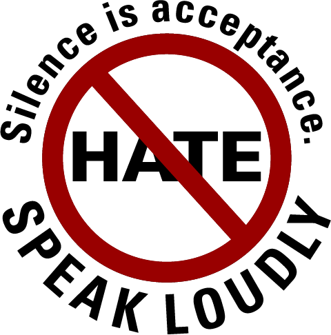
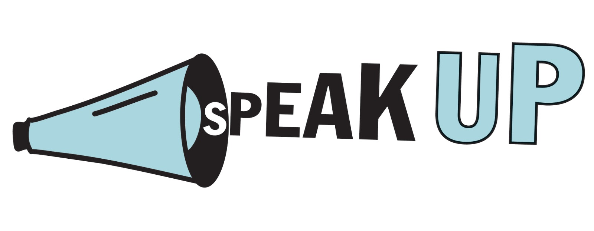

Welcome to the Say No To Hate Crime website
Hate crimes and incidents come in many different forms. It can be because of hatred on the grounds of your race and religion as well as sexual orientation, transgender identity or disability.
Here are the hate crimes that this site talks about:
- Bullying
- Racism
- Sexism
Hate crime in any form is wrong. This is why it is important that if a hate crime happens to you or someone you know, you report it. Reporting makes a difference to you, your friends, and your community. By reporting hate crime when it happens, you can help stop it happening to someone else. You will also help the police to better understand the level of hate crime in your local area, and improve the way they respond to it.

| Get help immediately. |
| In an emergency dial 999 or 112. |
| Make as much noise as you can to alert people. |
| As soon as you can, go somewhere you know is safe. |
| If you have been attacked, don't shower or change your clothes as it may destroy evidence. |
| If you have the confidence, tell the police why you think you were attacked. |
| If you have had your keys taken, ensure you change the locks. |
| Don't drink alcohol you need to give a clear account of what happened. |
| Use our reporting form to report the incident if you do not have the confidence to tell the police. |